negative positive
288 27 GMCSF Antibody Analysis
All of the below results are based on a follow-up period of days AFTER the bleed date tested.
Analysis, Using GMCSF as a Binary Result
Analysis, Using GMCSF at Baseline
Table 1. Demographics Stratified by GMCSF Result
Survival Analysis
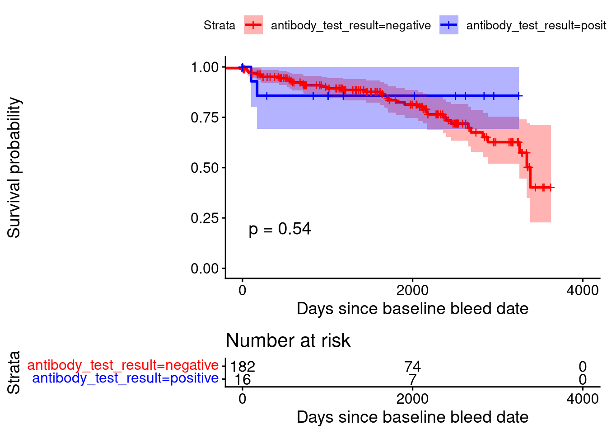
The statistical result above is derived from a log-rank test.
Cox Proportional Model of Survival
coef exp(coef) se(coef) z
antibody_test_resultpositive -0.27116140 0.7624934 0.73959752 -0.3666337
age_baseline 0.02090814 1.0211282 0.01434208 1.4578179
gendermale -0.38422591 0.6809776 0.38592053 -0.9956089
racenot_white 0.07790237 1.0810171 0.33734950 0.2309248
Pr(>|z|)
antibody_test_resultpositive 0.7138922
age_baseline 0.1448907
gendermale 0.3194402
racenot_white 0.8173732The statistical result above is derived from a Cox proportional model, adjusted for age_baseline + gender + race.
Correlation between GMCSF and RO52 ELISA Status
Estimate Std. Error z value
(Intercept) 0.38437803 0.77560182 0.4955868
antibody_test_resultpositive 0.71258236 0.64616754 1.1027827
racenot_white 0.86142217 0.39199322 2.1975436
gendermale -0.44184988 0.37481233 -1.1788563
age_at_bleed 0.02203537 0.01484975 1.4838884
antibody_clinical_diagnosisnon_JO1 -1.76226922 0.36435682 -4.8366576
Pr(>|z|)
(Intercept) 6.201860e-01
antibody_test_resultpositive 2.701216e-01
racenot_white 2.798165e-02
gendermale 2.384554e-01
age_at_bleed 1.378385e-01
antibody_clinical_diagnosisnon_JO1 1.320406e-06The statistical result above is derived from a logistic regression, adjusted for age_baseline + gender + race.
Correlation between GMCSF and Antibody Diagnosis
Estimate Std. Error z value Pr(>|z|)
(Intercept) -1.66765616 0.5557637 -3.0006567 2.693981e-03
antibody_test_resultpositive 0.54492854 0.4195775 1.2987554 1.940279e-01
racenot_white 1.03453327 0.2521391 4.1030261 4.077812e-05
gendermale 0.08817228 0.2691761 0.3275635 7.432417e-01
age_at_bleed 0.01456859 0.0100224 1.4536032 1.460563e-01The statistical result above is derived from a logistic regression, adjusted for age_baseline + gender + race.
Analysis, Using highest-GMCSF on Record
Table 1. Demographics Stratified by GMCSF Result
negative positive
280 35 Survival Analysis
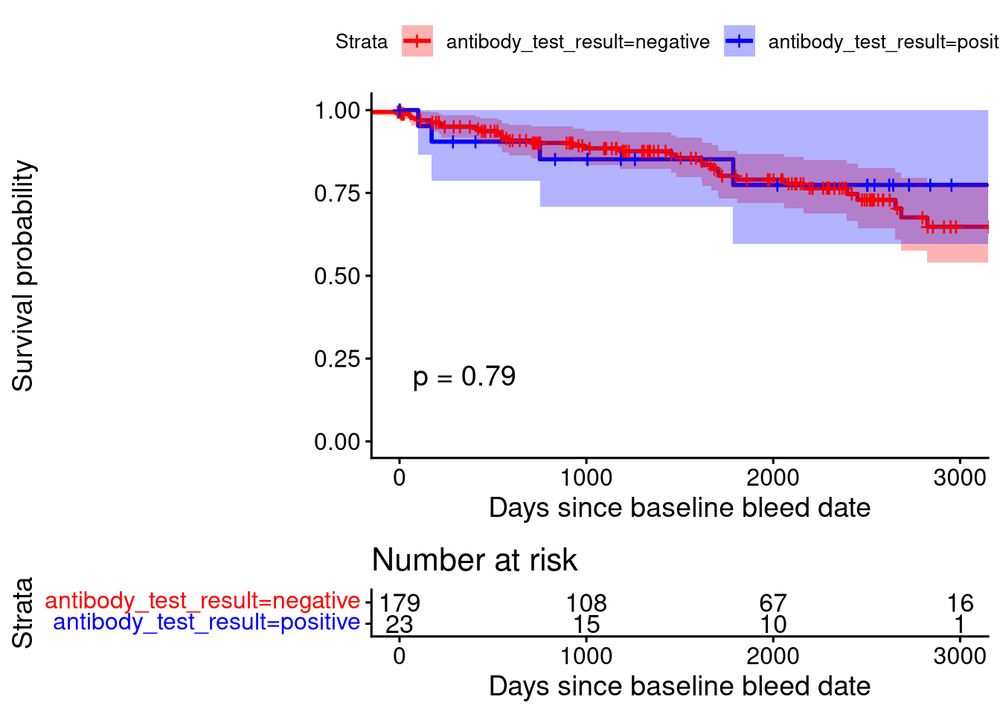
The statistical result above is derived from a log-rank test.
Cox Proportional Model of Survival
coef exp(coef) se(coef) z
antibody_test_resultpositive -0.01882160 0.9813544 0.54038154 -0.03483021
age_baseline 0.02172475 1.0219625 0.01441842 1.50673621
gendermale -0.37594466 0.6866403 0.38790557 -0.96916541
racenot_white 0.11783157 1.1250546 0.33558948 0.35111818
Pr(>|z|)
antibody_test_resultpositive 0.9722151
age_baseline 0.1318783
gendermale 0.3324627
racenot_white 0.7254997The statistical result above is derived from a Cox proportional model, adjusted for age_baseline + gender + race.
Correlation between GMCSF and RO52 ELISA Status
Estimate Std. Error z value
(Intercept) 0.39603350 0.77371192 0.5118617
antibody_test_resultpositive 0.31378837 0.52535598 0.5972871
racenot_white 0.83362568 0.38814610 2.1477111
gendermale -0.43476368 0.37400929 -1.1624408
age_at_bleed 0.02223615 0.01475952 1.5065634
antibody_clinical_diagnosisnon_JO1 -1.76157873 0.36443813 -4.8336840
Pr(>|z|)
(Intercept) 6.087478e-01
antibody_test_resultpositive 5.503157e-01
racenot_white 3.173671e-02
gendermale 2.450564e-01
age_at_bleed 1.319226e-01
antibody_clinical_diagnosisnon_JO1 1.340293e-06The statistical result above is derived from a logistic regression, adjusted for age_baseline + gender + race.
Correlation between GMCSF and Antibody Diagnosis
Estimate Std. Error z value Pr(>|z|)
(Intercept) -1.73820816 0.56134324 -3.0965157 1.958095e-03
antibody_test_resultpositive 0.76624704 0.37474381 2.0447223 4.088224e-02
racenot_white 1.02599698 0.25221579 4.0679332 4.743198e-05
gendermale 0.09224871 0.27023029 0.3413707 7.328245e-01
age_at_bleed 0.01509744 0.01007369 1.4987001 1.339514e-01The statistical result above is derived from a logistic regression, adjusted for age_baseline + gender + race.
Analysis, Using GMCSF as a Continuous Result
All results here have performed a log2() transformation on GMCSF measurements, due to the wide range in values.
Analysis, Using GMCSF at Baseline
Cox Proportional Model of Survival
coef exp(coef) se(coef) z Pr(>|z|)
log2(antibody_measurement) -0.1176884 0.8889730 0.1269261 -0.9272199 0.3538124
age_baseline 0.0201993 1.0204047 0.0143535 1.4072734 0.1593463
gendermale -0.3385833 0.7127794 0.3879381 -0.8727766 0.3827849
racenot_white 0.1196327 1.1270828 0.3386192 0.3532956 0.7238669Correlation between GMCSF and RO52
Call:
glm(formula = ro52_test_result ~ log2(antibody_measurement) +
gender + race + age_at_bleed, family = binomial(link = "logit"),
data = ro52.titer)
Coefficients:
Estimate Std. Error z value Pr(>|z|)
(Intercept) 0.44025 1.23824 0.356 0.722
log2(antibody_measurement) -0.01177 0.08961 -0.131 0.895
gendermale -0.41767 0.34441 -1.213 0.225
racenot_white 0.35089 0.33992 1.032 0.302
age_at_bleed 0.01258 0.01340 0.938 0.348
(Dispersion parameter for binomial family taken to be 1)
Null deviance: 236.52 on 198 degrees of freedom
Residual deviance: 233.61 on 194 degrees of freedom
(116 observations deleted due to missingness)
AIC: 243.61
Number of Fisher Scoring iterations: 4
Call:
glm(formula = RO52 ~ log2(antibody_measurement) + gender + race +
age_at_bleed, family = gaussian(link = "identity"), data = ro52.titer)
Coefficients:
Estimate Std. Error t value Pr(>|t|)
(Intercept) 74.4473 35.7279 2.084 0.0385 *
log2(antibody_measurement) -1.4055 2.5785 -0.545 0.5863
gendermale -20.9121 10.0758 -2.075 0.0393 *
racenot_white 4.6945 9.4814 0.495 0.6211
age_at_bleed 0.5223 0.3795 1.376 0.1703
---
Signif. codes: 0 '***' 0.001 '**' 0.01 '*' 0.05 '.' 0.1 ' ' 1
(Dispersion parameter for gaussian family taken to be 4049.077)
Null deviance: 810608 on 198 degrees of freedom
Residual deviance: 785521 on 194 degrees of freedom
(116 observations deleted due to missingness)
AIC: 2224.6
Number of Fisher Scoring iterations: 2
Call:
glm(formula = RO52 ~ log2(antibody_measurement) + gender + race +
age_at_bleed, family = gaussian(link = "identity"), data = ro52.lips)
Coefficients:
Estimate Std. Error t value Pr(>|t|)
(Intercept) 1006173.0 483647.7 2.080 0.0384 *
log2(antibody_measurement) 3681.7 36366.5 0.101 0.9194
gendermale -264589.5 137456.9 -1.925 0.0553 .
racenot_white 59112.1 128260.2 0.461 0.6453
age_at_bleed 628.1 5026.3 0.125 0.9006
---
Signif. codes: 0 '***' 0.001 '**' 0.01 '*' 0.05 '.' 0.1 ' ' 1
(Dispersion parameter for gaussian family taken to be 1.046765e+12)
Null deviance: 2.9080e+14 on 278 degrees of freedom
Residual deviance: 2.8681e+14 on 274 degrees of freedom
(36 observations deleted due to missingness)
AIC: 8520.5
Number of Fisher Scoring iterations: 2The above tests are logistic and linear models, corrected for age_at_bleed + race + gender.
Correlation between GMCSF and Antibody Diagnosis
Estimate Std. Error
(Intercept) 10.98759389 0.40187085
substitute(antibody_clinical_diagnosis)non_JO1 1.20616612 0.19294464
age_at_bleed -0.01010460 0.00746004
gendermale -0.01112436 0.20529349
racenot_white -0.12917523 0.19683886
t value Pr(>|t|)
(Intercept) 27.34110722 1.109495e-83
substitute(antibody_clinical_diagnosis)non_JO1 6.25135845 1.385054e-09
age_at_bleed -1.35449678 1.765904e-01
gendermale -0.05418759 9.568215e-01
racenot_white -0.65624861 5.121639e-01
Kruskal-Wallis rank sum test
data: log2(antibody_measurement) by substitute(antibody_clinical_diagnosis)
Kruskal-Wallis chi-squared = 147.56, df = 5, p-value < 2.2e-16Fold_Change 2.5 % 97.5 %
2.307 1.775 2.999 The above test was first a linear regression adjusted for age_at_bleed + gender + race, to determine if MEAN values by antibody category (JO1, non_JO1) differed according to GMCSF levels.
The next test result is the output of a Kruskal-Wallis rank sum test.
Finally, the fold-change of the linear regression is shown, show what fold-change differences exist between the non-JO1 (the baseline) vs JO1 groups.
Analysis, Using highest-GMCSF on Record
Cox Proportional Model of Survival
coef exp(coef) se(coef) z
log2(antibody_measurement) -0.09699280 0.9075625 0.11551865 -0.8396290
age_baseline 0.02036926 1.0205781 0.01439412 1.4151092
gendermale -0.30454184 0.7374612 0.39052265 -0.7798314
racenot_white 0.14597488 1.1571671 0.33722386 0.4328723
Pr(>|z|)
log2(antibody_measurement) 0.4011165
age_baseline 0.1570365
gendermale 0.4354901
racenot_white 0.6651075Correlation between GMCSF and RO52
Call:
glm(formula = ro52_test_result ~ log2(antibody_measurement) +
gender + race + age_at_bleed, family = binomial(link = "logit"),
data = ro52.titer)
Coefficients:
Estimate Std. Error z value Pr(>|z|)
(Intercept) 0.74188 1.19282 0.622 0.534
log2(antibody_measurement) -0.04349 0.08380 -0.519 0.604
gendermale -0.41578 0.34474 -1.206 0.228
racenot_white 0.36020 0.33985 1.060 0.289
age_at_bleed 0.01352 0.01343 1.007 0.314
(Dispersion parameter for binomial family taken to be 1)
Null deviance: 236.52 on 198 degrees of freedom
Residual deviance: 233.19 on 194 degrees of freedom
(116 observations deleted due to missingness)
AIC: 243.19
Number of Fisher Scoring iterations: 4
Call:
glm(formula = RO52 ~ log2(antibody_measurement) + gender + race +
age_at_bleed, family = gaussian(link = "identity"), data = ro52.titer)
Coefficients:
Estimate Std. Error t value Pr(>|t|)
(Intercept) 77.8944 34.7809 2.240 0.0263 *
log2(antibody_measurement) -1.9025 2.4440 -0.778 0.4373
gendermale -20.7880 10.0582 -2.067 0.0401 *
racenot_white 5.0237 9.4454 0.532 0.5954
age_at_bleed 0.5631 0.3795 1.484 0.1395
---
Signif. codes: 0 '***' 0.001 '**' 0.01 '*' 0.05 '.' 0.1 ' ' 1
(Dispersion parameter for gaussian family taken to be 4035.643)
Null deviance: 810608 on 198 degrees of freedom
Residual deviance: 782915 on 194 degrees of freedom
(116 observations deleted due to missingness)
AIC: 2224
Number of Fisher Scoring iterations: 2
Call:
glm(formula = RO52 ~ log2(antibody_measurement) + gender + race +
age_at_bleed, family = gaussian(link = "identity"), data = ro52.lips)
Coefficients:
Estimate Std. Error t value Pr(>|t|)
(Intercept) 930507 476268 1.954 0.0517 .
log2(antibody_measurement) 9083 35021 0.259 0.7955
gendermale -265035 137364 -1.929 0.0547 .
racenot_white 58060 128313 0.452 0.6513
age_at_bleed 922 5029 0.183 0.8547
---
Signif. codes: 0 '***' 0.001 '**' 0.01 '*' 0.05 '.' 0.1 ' ' 1
(Dispersion parameter for gaussian family taken to be 1.046481e+12)
Null deviance: 2.9080e+14 on 278 degrees of freedom
Residual deviance: 2.8674e+14 on 274 degrees of freedom
(36 observations deleted due to missingness)
AIC: 8520.5
Number of Fisher Scoring iterations: 2Correlation between GMCSF and Antibody Diagnosis
Estimate Std. Error
(Intercept) 11.100262673 0.42024938
substitute(antibody_clinical_diagnosis)non_JO1 1.267944132 0.20069336
age_at_bleed -0.009805240 0.00776788
gendermale -0.004158578 0.21346062
racenot_white -0.019162026 0.20438876
t value Pr(>|t|)
(Intercept) 26.41351378 1.743867e-80
substitute(antibody_clinical_diagnosis)non_JO1 6.31781809 9.488525e-10
age_at_bleed -1.26228012 2.078219e-01
gendermale -0.01948171 9.844697e-01
racenot_white -0.09375284 9.253677e-01
Kruskal-Wallis rank sum test
data: log2(antibody_measurement) by substitute(antibody_clinical_diagnosis)
Kruskal-Wallis chi-squared = 147.56, df = 5, p-value < 2.2e-16Fold_Change 2.5 % 97.5 %
2.408 1.833 3.163 The above test was first a linear regression adjusted for age_at_bleed + gender + race, to determine if MEAN values by antibody category differed according to GMCSF levels.
The next test result is the output of a Kruskal-Wallis rank sum test.
Finally, the fold-change of the linear regression is shown, which displays what fold-change differences exist between the JO1 (the baseline) vs non-JO1 groups – implying that compared to JO1, non-JO1 patients have (on average and when holding the other variables constant) 2.408 times higher GMCSF levels.
Correlation between RO52 and Antibody Diagnosis
Estimate Std. Error
(Intercept) 18.500248431 0.80545772
substitute(antibody_clinical_diagnosis)non_JO1 -1.544153505 0.37715932
age_at_bleed 0.003095471 0.01493381
gendermale -0.767797796 0.40634515
racenot_white 1.016140868 0.38893967
t value Pr(>|t|)
(Intercept) 22.9686152 8.044133e-66
substitute(antibody_clinical_diagnosis)non_JO1 -4.0941677 5.580428e-05
age_at_bleed 0.2072794 8.359457e-01
gendermale -1.8895213 5.987767e-02
racenot_white 2.6125925 9.481831e-03
Kruskal-Wallis rank sum test
data: log2(RO52) by substitute(antibody_clinical_diagnosis)
Kruskal-Wallis chi-squared = 11.013, df = 1, p-value = 0.000905Fold_Change 2.5 % 97.5 %
0.343 0.205 0.572 The above test was first a linear regression adjusted for age_at_bleed + gender + race, to determine if MEAN values by antibody category differed according to RO52 levels.
The next test result is the output of a Kruskal-Wallis rank sum test.
Finally, the fold-change of the linear regression is shown, which displays what fold-change differences exist between the JO1 (the baseline) vs non-JO1 groups – implying that compared to JO1, non-JO1 patients have (on average and when holding the other variables constant) 0.343 times lower GMCSF levels (alternatively, JO1 patients have 2.9154519 higher RO52 levels compared to non-JO1).
Does GMCSF LIPS Measurement Correlate with FVC Change Over Time?
This compares FVC values closest to the bleed date with the FVC values closest to the patient’s last known alive date.
Estimate Std. Error t value Pr(>|t|)
(Intercept) 0.188570624 0.1138330023 1.656555 0.1002439348
log2(antibody_measurement) 0.011253509 0.0082387277 1.365928 0.1745375196
FVC_initial -0.237466070 0.0624782503 -3.800780 0.0002289066
age_at_bleed -0.001722731 0.0009525728 -1.808503 0.0730533583
racenot_white -0.062642467 0.0263572871 -2.376666 0.0190651474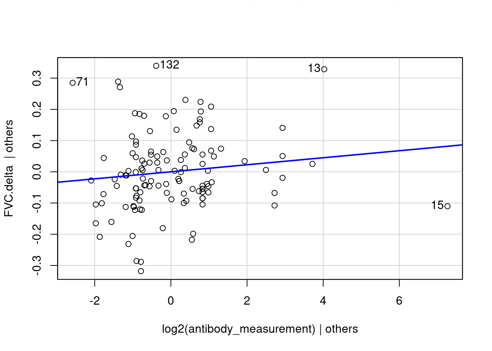
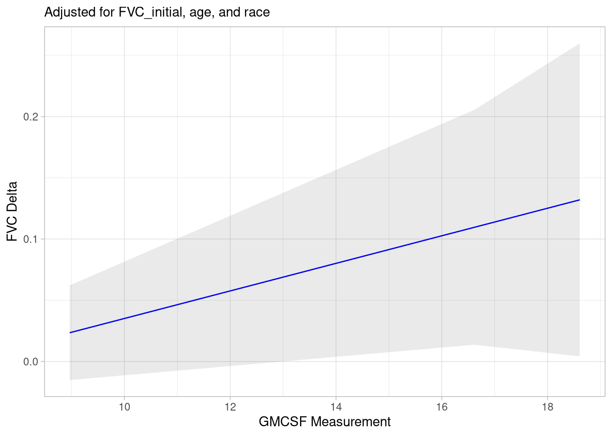
PCA Clustering Using GMCSF + RO52 LIPS Data
Below are data attempting to find PCA-based clusters, utilizing RO52 and GMCSF LIPS measurements.
Given we know from above that GMCSF levels differ based on JO1 vs non-JO1 antibody status, we have included that variable as well in our clustering generator.
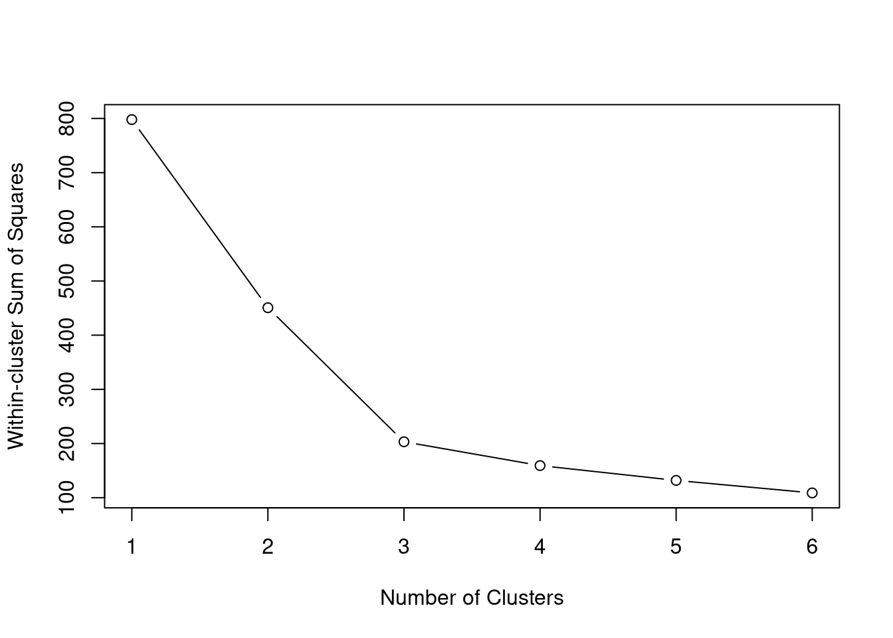
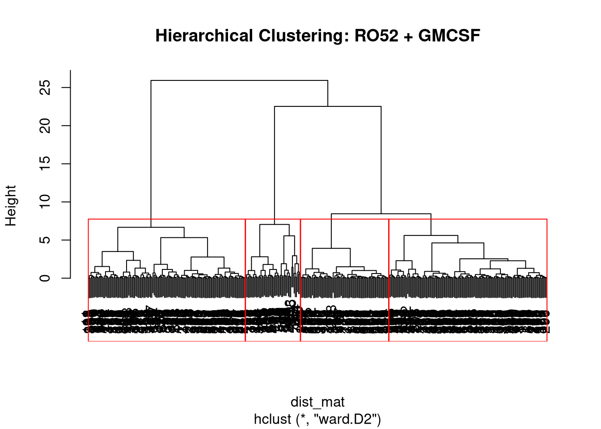
----------------------------------------------------
Gaussian finite mixture model fitted by EM algorithm
----------------------------------------------------
Mclust VEI (diagonal, equal shape) model with 6 components:
log-likelihood n df BIC ICL
-863.1466 400 24 -1870.088 -1984.828
Clustering table:
1 2 3 4 5 6
91 62 65 48 83 51 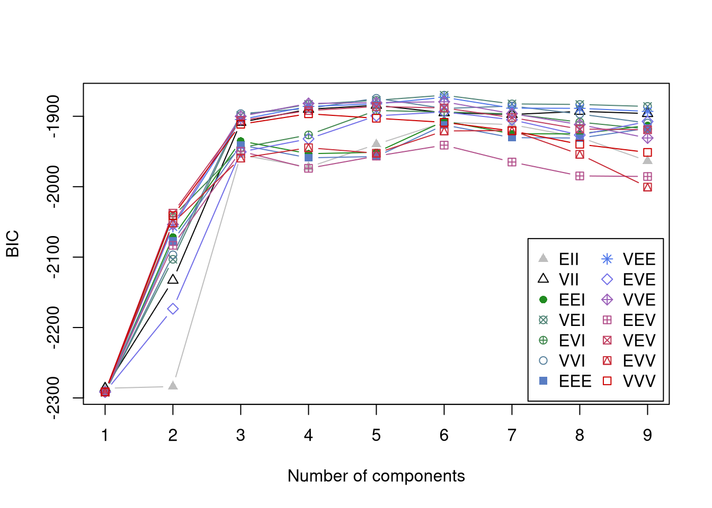
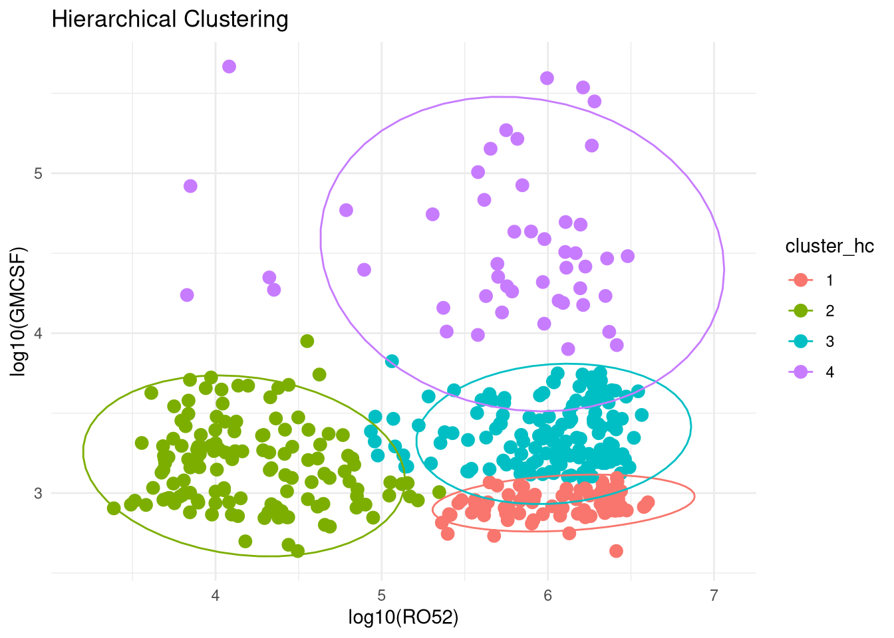
| Characteristic | Overall N = 400 |
1 N = 77 |
2 N = 137 |
3 N = 138 |
4 N = 48 |
|---|---|---|---|---|---|
| age_at_bleed | 51 (42, 57) | 52 (39, 59) | 51 (42, 58) | 50 (40, 55) | 51 (46, 54) |
| Unknown | 11 | 0 | 5 | 5 | 1 |
| gender | |||||
| female | 292 (73%) | 61 (79%) | 91 (66%) | 105 (76%) | 35 (73%) |
| male | 108 (27%) | 16 (21%) | 46 (34%) | 33 (24%) | 13 (27%) |
| race | |||||
| white | 231 (58%) | 49 (64%) | 91 (66%) | 65 (47%) | 26 (54%) |
| not_white | 169 (42%) | 28 (36%) | 46 (34%) | 73 (53%) | 22 (46%) |
| vital_status | |||||
| alive | 341 (85%) | 58 (75%) | 120 (88%) | 120 (87%) | 43 (90%) |
| deceased | 58 (15%) | 19 (25%) | 16 (12%) | 18 (13%) | 5 (10%) |
| Unknown | 1 | 0 | 1 | 0 | 0 |
| GMCSF | 1,715 (974, 3,167) | 863 (753, 972) | 1,446 (923, 2,049) | 2,244 (1,624, 3,519) | 26,619 (17,075, 63,480) |
| RO52 | 532,986 (26,564, 1,569,116) | 1,479,992 (580,073, 2,246,981) | 12,988 (7,031, 31,242) | 1,187,081 (563,655, 1,945,000) | 747,159 (397,208, 1,518,177) |
| ild_present | |||||
| ILD absent | 39 (9.8%) | 3 (3.9%) | 19 (14%) | 13 (9.5%) | 4 (8.3%) |
| ILD present | 352 (88%) | 72 (94%) | 117 (85%) | 121 (88%) | 42 (88%) |
| unavailable | 8 (2.0%) | 2 (2.6%) | 1 (0.7%) | 3 (2.2%) | 2 (4.2%) |
| Unknown | 1 | 0 | 0 | 1 | 0 |
| ild_type | |||||
| fibrotic NSIP | 20 (5.8%) | 7 (9.6%) | 6 (5.3%) | 4 (3.5%) | 3 (7.1%) |
| GGO | 42 (12%) | 11 (15%) | 14 (12%) | 16 (14%) | 1 (2.4%) |
| nodules | 1 (0.3%) | 0 (0%) | 1 (0.9%) | 0 (0%) | 0 (0%) |
| NSIP | 120 (35%) | 20 (27%) | 48 (42%) | 41 (36%) | 11 (26%) |
| NSIP-OP | 12 (3.5%) | 2 (2.7%) | 3 (2.6%) | 7 (6.2%) | 0 (0%) |
| OP | 8 (2.3%) | 3 (4.1%) | 3 (2.6%) | 0 (0%) | 2 (4.8%) |
| OTHER | 3 (0.9%) | 2 (2.7%) | 1 (0.9%) | 0 (0%) | 0 (0%) |
| subpleural fibrosis | 61 (18%) | 9 (12%) | 23 (20%) | 16 (14%) | 13 (31%) |
| UIP | 40 (12%) | 10 (14%) | 10 (8.8%) | 13 (12%) | 7 (17%) |
| unavailable | 35 (10%) | 9 (12%) | 5 (4.4%) | 16 (14%) | 5 (12%) |
| Unknown | 58 | 4 | 23 | 25 | 6 |
| rads_severity | |||||
| mild | 166 (57%) | 39 (64%) | 65 (64%) | 43 (45%) | 19 (54%) |
| moderate | 86 (29%) | 17 (28%) | 23 (23%) | 33 (35%) | 13 (37%) |
| severe | 40 (14%) | 5 (8.2%) | 13 (13%) | 19 (20%) | 3 (8.6%) |
| Unknown | 108 | 16 | 36 | 43 | 13 |
| number_of_active_medications | 2.00 (2.00, 3.00) | 2.00 (2.00, 3.00) | 2.00 (2.00, 3.00) | 2.00 (1.00, 3.00) | 3.00 (2.00, 4.00) |
| Unknown | 59 | 12 | 26 | 16 | 5 |
| on_prednisone | |||||
| false | 67 (17%) | 8 (10%) | 13 (9.5%) | 32 (23%) | 14 (29%) |
| no records available | 59 (15%) | 12 (16%) | 26 (19%) | 16 (12%) | 5 (10%) |
| true | 274 (69%) | 57 (74%) | 98 (72%) | 90 (65%) | 29 (60%) |
| on_methotrexate | |||||
| false | 243 (61%) | 45 (58%) | 80 (58%) | 91 (66%) | 27 (56%) |
| no records available | 59 (15%) | 12 (16%) | 26 (19%) | 16 (12%) | 5 (10%) |
| true | 98 (25%) | 20 (26%) | 31 (23%) | 31 (22%) | 16 (33%) |
| on_azathioprine | |||||
| false | 199 (50%) | 34 (44%) | 75 (55%) | 64 (46%) | 26 (54%) |
| no records available | 59 (15%) | 12 (16%) | 26 (19%) | 16 (12%) | 5 (10%) |
| true | 142 (36%) | 31 (40%) | 36 (26%) | 58 (42%) | 17 (35%) |
| on_mycophenolate_mofetil | |||||
| false | 218 (55%) | 49 (64%) | 65 (47%) | 77 (56%) | 27 (56%) |
| no records available | 59 (15%) | 12 (16%) | 26 (19%) | 16 (12%) | 5 (10%) |
| true | 123 (31%) | 16 (21%) | 46 (34%) | 45 (33%) | 16 (33%) |
| on_rituximab | |||||
| false | 281 (70%) | 57 (74%) | 89 (65%) | 98 (71%) | 37 (77%) |
| no records available | 59 (15%) | 12 (16%) | 26 (19%) | 16 (12%) | 5 (10%) |
| true | 60 (15%) | 8 (10%) | 22 (16%) | 24 (17%) | 6 (13%) |
| clinical_myositis_diagnosis | |||||
| amyopathic dermatomyositis | 10 (3.8%) | 0 (0%) | 5 (5.9%) | 3 (3.7%) | 2 (5.7%) |
| dermatomyositis | 183 (69%) | 39 (61%) | 61 (72%) | 62 (76%) | 21 (60%) |
| inclusion body myositis | 2 (0.8%) | 0 (0%) | 2 (2.4%) | 0 (0%) | 0 (0%) |
| polymyositis | 71 (27%) | 25 (39%) | 17 (20%) | 17 (21%) | 12 (34%) |
| Unknown | 134 | 13 | 52 | 56 | 13 |
| proxweak | |||||
| absent | 37 (13%) | 6 (8.8%) | 13 (16%) | 15 (17%) | 3 (8.3%) |
| present | 240 (87%) | 62 (91%) | 70 (84%) | 75 (83%) | 33 (92%) |
| Unknown | 123 | 9 | 54 | 48 | 12 |
| distalweak | |||||
| absent | 169 (82%) | 36 (80%) | 53 (79%) | 53 (82%) | 27 (90%) |
| present | 38 (18%) | 9 (20%) | 14 (21%) | 12 (18%) | 3 (10%) |
| Unknown | 193 | 32 | 70 | 73 | 18 |
| 1 Median (Q1, Q3); n (%) |
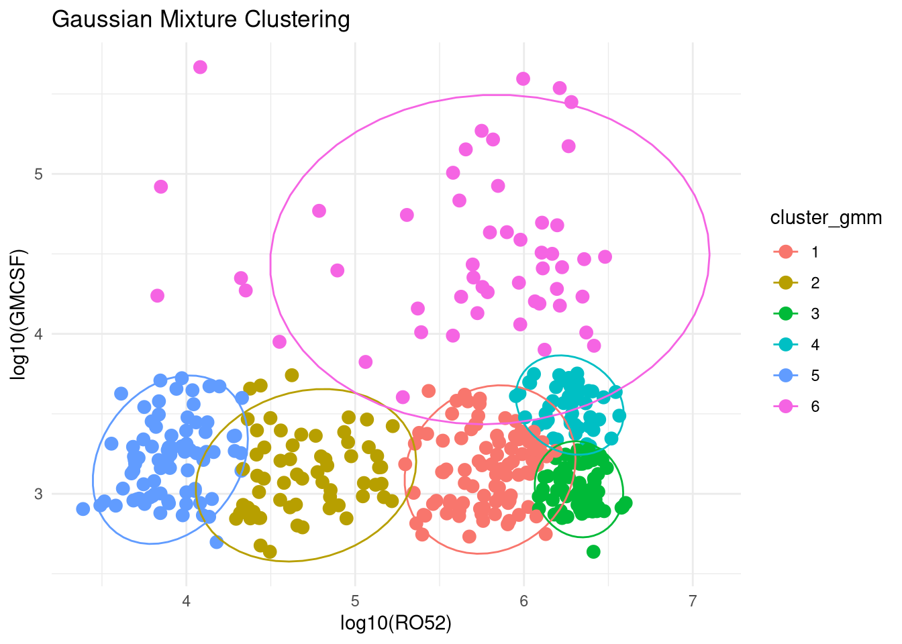
| Characteristic | 1 N = 91 |
2 N = 62 |
3 N = 65 |
4 N = 48 |
5 N = 83 |
6 N = 51 |
|---|---|---|---|---|---|---|
| age_at_bleed | 51 (42, 55) | 50 (41, 54) | 51 (39, 58) | 49 (38, 55) | 52 (43, 60) | 51 (46, 54) |
| Unknown | 2 | 3 | 2 | 1 | 2 | 1 |
| gender | ||||||
| female | 63 (69%) | 41 (66%) | 56 (86%) | 40 (83%) | 57 (69%) | 35 (69%) |
| male | 28 (31%) | 21 (34%) | 9 (14%) | 8 (17%) | 26 (31%) | 16 (31%) |
| race | ||||||
| white | 50 (55%) | 39 (63%) | 42 (65%) | 17 (35%) | 55 (66%) | 28 (55%) |
| not_white | 41 (45%) | 23 (37%) | 23 (35%) | 31 (65%) | 28 (34%) | 23 (45%) |
| vital_status | ||||||
| alive | 79 (87%) | 55 (90%) | 51 (78%) | 38 (79%) | 72 (87%) | 46 (90%) |
| deceased | 12 (13%) | 6 (9.8%) | 14 (22%) | 10 (21%) | 11 (13%) | 5 (9.8%) |
| Unknown | 0 | 1 | 0 | 0 | 0 | 0 |
| GMCSF | 1,426 (875, 2,147) | 1,270 (851, 1,956) | 1,029 (830, 1,341) | 3,706 (2,772, 4,555) | 1,677 (996, 2,309) | 25,669 (15,459, 58,786) |
| RO52 | 644,169 (414,635, 929,840) | 45,336 (27,519, 88,821) | 2,148,979 (1,739,004, 2,560,953) | 1,921,399 (1,485,672, 2,337,233) | 7,881 (5,630, 11,413) | 655,541 (246,029, 1,469,567) |
| ild_present | ||||||
| ILD absent | 9 (9.9%) | 3 (4.8%) | 5 (7.8%) | 2 (4.2%) | 16 (19%) | 4 (7.8%) |
| ILD present | 79 (87%) | 58 (94%) | 57 (89%) | 46 (96%) | 67 (81%) | 45 (88%) |
| unavailable | 3 (3.3%) | 1 (1.6%) | 2 (3.1%) | 0 (0%) | 0 (0%) | 2 (3.9%) |
| Unknown | 0 | 0 | 1 | 0 | 0 | 0 |
| ild_type | ||||||
| fibrotic NSIP | 4 (5.2%) | 3 (5.4%) | 4 (7.1%) | 3 (7.1%) | 3 (4.5%) | 3 (6.7%) |
| GGO | 12 (16%) | 7 (13%) | 11 (20%) | 3 (7.1%) | 8 (12%) | 1 (2.2%) |
| nodules | 0 (0%) | 0 (0%) | 0 (0%) | 0 (0%) | 1 (1.5%) | 0 (0%) |
| NSIP | 26 (34%) | 19 (34%) | 11 (20%) | 21 (50%) | 30 (45%) | 13 (29%) |
| NSIP-OP | 2 (2.6%) | 4 (7.1%) | 2 (3.6%) | 2 (4.8%) | 2 (3.0%) | 0 (0%) |
| OP | 1 (1.3%) | 1 (1.8%) | 2 (3.6%) | 0 (0%) | 2 (3.0%) | 2 (4.4%) |
| OTHER | 2 (2.6%) | 0 (0%) | 0 (0%) | 0 (0%) | 1 (1.5%) | 0 (0%) |
| subpleural fibrosis | 11 (14%) | 11 (20%) | 6 (11%) | 6 (14%) | 13 (20%) | 14 (31%) |
| UIP | 8 (10%) | 7 (13%) | 9 (16%) | 5 (12%) | 4 (6.1%) | 7 (16%) |
| unavailable | 11 (14%) | 4 (7.1%) | 11 (20%) | 2 (4.8%) | 2 (3.0%) | 5 (11%) |
| Unknown | 14 | 6 | 9 | 6 | 17 | 6 |
| rads_severity | ||||||
| mild | 37 (61%) | 33 (69%) | 28 (62%) | 10 (26%) | 38 (62%) | 20 (53%) |
| moderate | 17 (28%) | 9 (19%) | 13 (29%) | 18 (46%) | 14 (23%) | 15 (39%) |
| severe | 7 (11%) | 6 (13%) | 4 (8.9%) | 11 (28%) | 9 (15%) | 3 (7.9%) |
| Unknown | 30 | 14 | 20 | 9 | 22 | 13 |
| number_of_active_medications | 2.00 (1.00, 3.00) | 2.00 (2.00, 3.00) | 2.00 (2.00, 3.00) | 2.00 (2.00, 4.00) | 2.00 (2.00, 3.00) | 3.00 (2.00, 4.00) |
| Unknown | 15 | 5 | 7 | 6 | 21 | 5 |
| on_prednisone | ||||||
| false | 17 (19%) | 7 (11%) | 9 (14%) | 13 (27%) | 7 (8.4%) | 14 (27%) |
| no records available | 15 (16%) | 5 (8.1%) | 7 (11%) | 6 (13%) | 21 (25%) | 5 (9.8%) |
| true | 59 (65%) | 50 (81%) | 49 (75%) | 29 (60%) | 55 (66%) | 32 (63%) |
| on_methotrexate | ||||||
| false | 54 (59%) | 46 (74%) | 40 (62%) | 34 (71%) | 40 (48%) | 29 (57%) |
| no records available | 15 (16%) | 5 (8.1%) | 7 (11%) | 6 (13%) | 21 (25%) | 5 (9.8%) |
| true | 22 (24%) | 11 (18%) | 18 (28%) | 8 (17%) | 22 (27%) | 17 (33%) |
| on_azathioprine | ||||||
| false | 40 (44%) | 36 (58%) | 28 (43%) | 22 (46%) | 44 (53%) | 29 (57%) |
| no records available | 15 (16%) | 5 (8.1%) | 7 (11%) | 6 (13%) | 21 (25%) | 5 (9.8%) |
| true | 36 (40%) | 21 (34%) | 30 (46%) | 20 (42%) | 18 (22%) | 17 (33%) |
| on_mycophenolate_mofetil | ||||||
| false | 55 (60%) | 33 (53%) | 45 (69%) | 22 (46%) | 34 (41%) | 29 (57%) |
| no records available | 15 (16%) | 5 (8.1%) | 7 (11%) | 6 (13%) | 21 (25%) | 5 (9.8%) |
| true | 21 (23%) | 24 (39%) | 13 (20%) | 20 (42%) | 28 (34%) | 17 (33%) |
| on_rituximab | ||||||
| false | 67 (74%) | 47 (76%) | 49 (75%) | 29 (60%) | 49 (59%) | 40 (78%) |
| no records available | 15 (16%) | 5 (8.1%) | 7 (11%) | 6 (13%) | 21 (25%) | 5 (9.8%) |
| true | 9 (9.9%) | 10 (16%) | 9 (14%) | 13 (27%) | 13 (16%) | 6 (12%) |
| clinical_myositis_diagnosis | ||||||
| amyopathic dermatomyositis | 0 (0%) | 6 (13%) | 0 (0%) | 0 (0%) | 2 (4.4%) | 2 (5.4%) |
| dermatomyositis | 46 (75%) | 27 (59%) | 30 (61%) | 21 (75%) | 36 (80%) | 23 (62%) |
| inclusion body myositis | 0 (0%) | 1 (2.2%) | 0 (0%) | 0 (0%) | 1 (2.2%) | 0 (0%) |
| polymyositis | 15 (25%) | 12 (26%) | 19 (39%) | 7 (25%) | 6 (13%) | 12 (32%) |
| Unknown | 30 | 16 | 16 | 20 | 38 | 14 |
| proxweak | ||||||
| absent | 5 (7.5%) | 9 (21%) | 7 (13%) | 6 (19%) | 7 (15%) | 3 (8.1%) |
| present | 62 (93%) | 34 (79%) | 46 (87%) | 25 (81%) | 39 (85%) | 34 (92%) |
| Unknown | 24 | 19 | 12 | 17 | 37 | 14 |
| distalweak | ||||||
| absent | 37 (80%) | 31 (91%) | 30 (86%) | 16 (70%) | 27 (71%) | 28 (90%) |
| present | 9 (20%) | 3 (8.8%) | 5 (14%) | 7 (30%) | 11 (29%) | 3 (9.7%) |
| Unknown | 45 | 28 | 30 | 25 | 45 | 20 |
| 1 Median (Q1, Q3); n (%) |
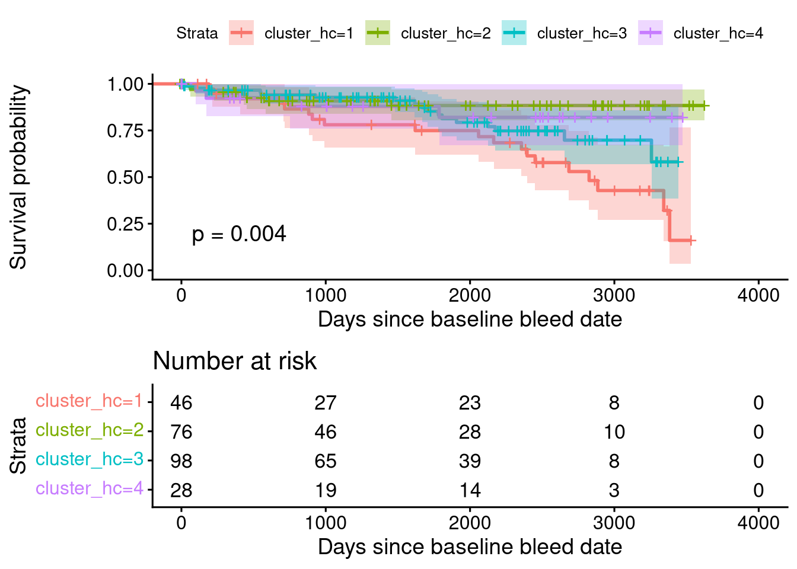
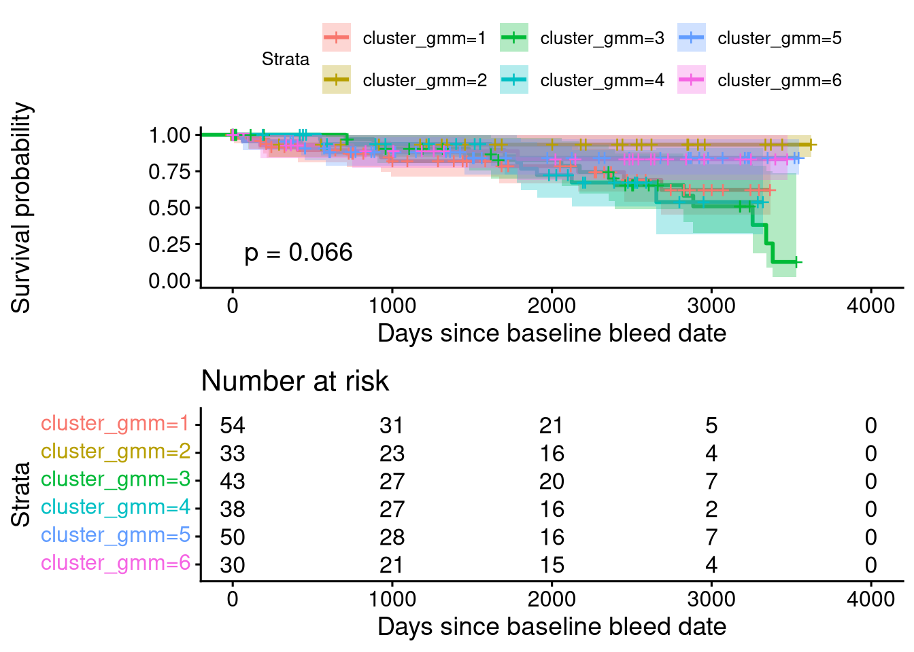
Call:
coxph(formula = Surv(survival_time, event) ~ log2(RO52) + log2(GMCSF) +
age_at_bleed + gender + race, data = dt_wide.km)
n= 250, number of events= 47
coef exp(coef) se(coef) z Pr(>|z|)
log2(RO52) 0.13052 1.13942 0.05687 2.295 0.0217 *
log2(GMCSF) -0.25239 0.77694 0.12273 -2.056 0.0397 *
age_at_bleed 0.01591 1.01604 0.01335 1.192 0.2333
gendermale -0.62830 0.53350 0.40092 -1.567 0.1171
racenot_white 0.03564 1.03629 0.31220 0.114 0.9091
---
Signif. codes: 0 '***' 0.001 '**' 0.01 '*' 0.05 '.' 0.1 ' ' 1
exp(coef) exp(-coef) lower .95 upper .95
log2(RO52) 1.1394 0.8776 1.0192 1.2738
log2(GMCSF) 0.7769 1.2871 0.6108 0.9882
age_at_bleed 1.0160 0.9842 0.9898 1.0430
gendermale 0.5335 1.8744 0.2431 1.1706
racenot_white 1.0363 0.9650 0.5620 1.9109
Concordance= 0.62 (se = 0.044 )
Likelihood ratio test= 18.33 on 5 df, p=0.003
Wald test = 16.32 on 5 df, p=0.006
Score (logrank) test = 17.32 on 5 df, p=0.004PCA Clustering Using GMCSF + RO52 + JO1-vs-nonJO1 Status
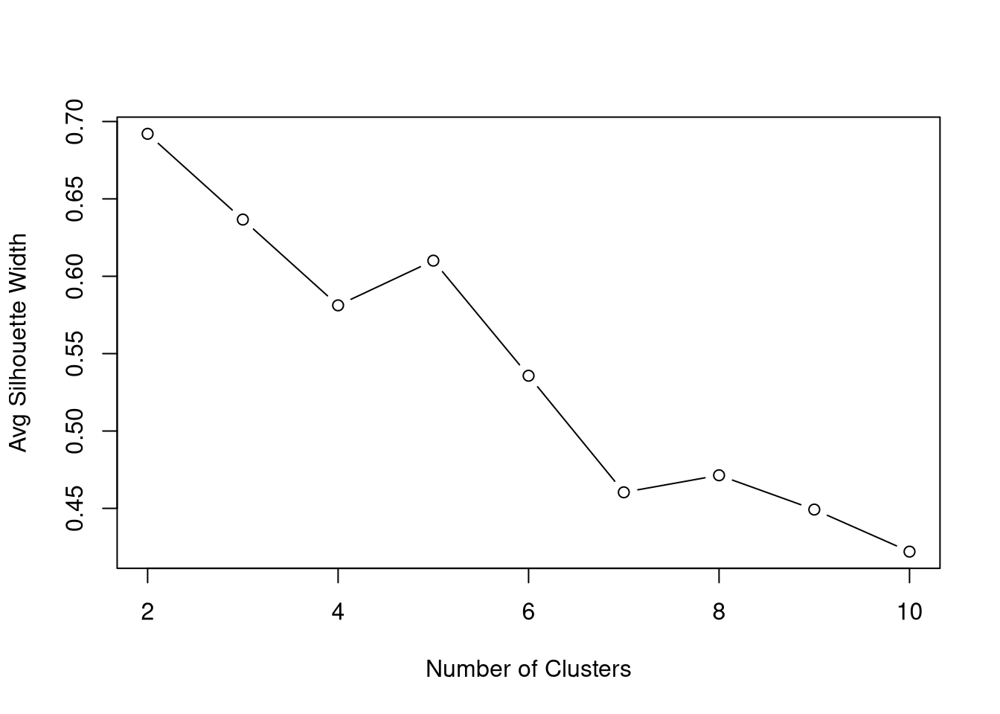
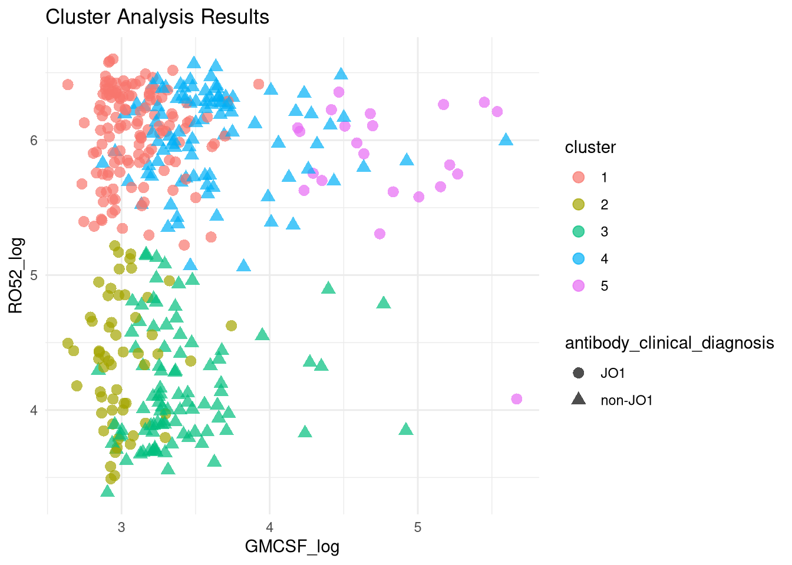
Call:
coxph(formula = Surv(survival_time, event) ~ cluster + age_at_bleed +
gender, data = dt_wide.with_kmedoids)
n= 250, number of events= 47
coef exp(coef) se(coef) z Pr(>|z|)
cluster2 -0.81287 0.44358 0.61531 -1.321 0.1865
cluster3 -1.26554 0.28209 0.49626 -2.550 0.0108 *
cluster4 -0.33427 0.71586 0.35193 -0.950 0.3422
cluster5 -1.34013 0.26181 1.03685 -1.293 0.1962
age_at_bleed 0.01545 1.01557 0.01316 1.175 0.2401
gendermale -0.74655 0.47400 0.39785 -1.876 0.0606 .
---
Signif. codes: 0 '***' 0.001 '**' 0.01 '*' 0.05 '.' 0.1 ' ' 1
exp(coef) exp(-coef) lower .95 upper .95
cluster2 0.4436 2.2544 0.13281 1.4816
cluster3 0.2821 3.5450 0.10665 0.7461
cluster4 0.7159 1.3969 0.35914 1.4269
cluster5 0.2618 3.8195 0.03431 1.9978
age_at_bleed 1.0156 0.9847 0.98972 1.0421
gendermale 0.4740 2.1097 0.21734 1.0338
Concordance= 0.615 (se = 0.043 )
Likelihood ratio test= 17.26 on 6 df, p=0.008
Wald test = 14.71 on 6 df, p=0.02
Score (logrank) test = 16.15 on 6 df, p=0.01 chisq df p
cluster 8.33 4 0.080
age_at_bleed 4.27 1 0.039
gender 3.48 1 0.062
GLOBAL 14.28 6 0.027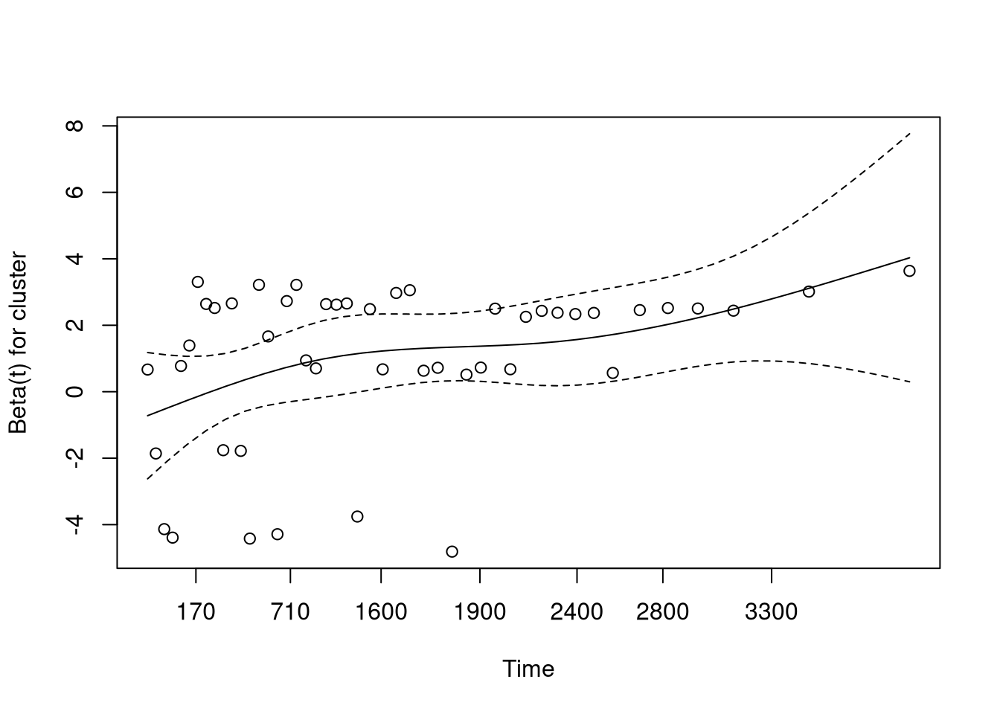
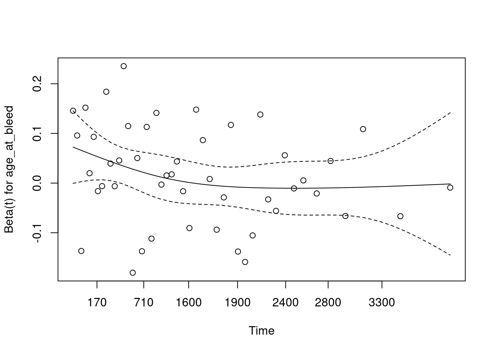
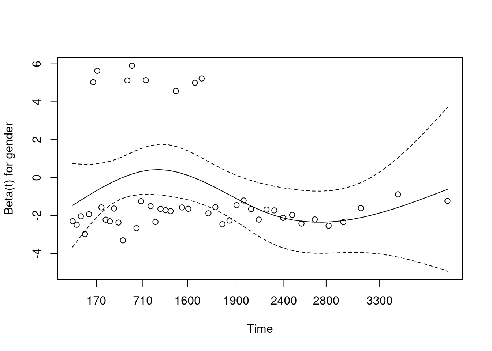
This plot (and table printed above) suggests that the hazard from age is not proportional, meaning the model assumptions are violated.
We can adjust for this by stratifying based on age.
Call:
coxph(formula = Surv(survival_time, event) ~ cluster + gender +
strata(age_quartile), data = dt_wide.with_kmedoids[survival_time <=
365.25 * 10])
n= 250, number of events= 47
coef exp(coef) se(coef) z Pr(>|z|)
cluster1 1.2092 3.3507 0.5070 2.385 0.0171 *
cluster2 0.3072 1.3596 0.7558 0.406 0.6844
cluster4 0.9551 2.5989 0.5425 1.761 0.0783 .
cluster5 0.1417 1.1522 1.1259 0.126 0.8999
gendermale -0.7136 0.4899 0.4034 -1.769 0.0769 .
---
Signif. codes: 0 '***' 0.001 '**' 0.01 '*' 0.05 '.' 0.1 ' ' 1
exp(coef) exp(-coef) lower .95 upper .95
cluster1 3.3507 0.2984 1.2405 9.051
cluster2 1.3596 0.7355 0.3091 5.980
cluster4 2.5989 0.3848 0.8975 7.526
cluster5 1.1522 0.8679 0.1268 10.468
gendermale 0.4899 2.0413 0.2222 1.080
Concordance= 0.603 (se = 0.044 )
Likelihood ratio test= 15.01 on 5 df, p=0.01
Wald test = 12.4 on 5 df, p=0.03
Score (logrank) test = 13.77 on 5 df, p=0.02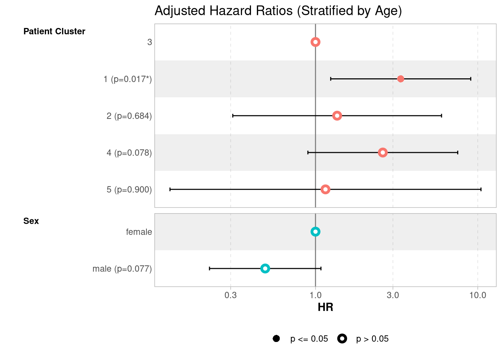
| Characteristic | 3 N = 55 |
1 N = 83 |
2 N = 33 |
4 N = 71 |
5 N = 8 |
|---|---|---|---|---|---|
| age_at_bleed | 53 (46, 60) | 52 (42, 60) | 54 (40, 60) | 50 (41, 54) | 47 (38, 53) |
| gender | |||||
| female | 35 (64%) | 65 (78%) | 26 (79%) | 51 (72%) | 7 (88%) |
| male | 20 (36%) | 18 (22%) | 7 (21%) | 20 (28%) | 1 (13%) |
| race | |||||
| white | 30 (55%) | 56 (67%) | 28 (85%) | 22 (31%) | 5 (63%) |
| not_white | 25 (45%) | 27 (33%) | 5 (15%) | 49 (69%) | 3 (38%) |
| vital_status | |||||
| alive | 50 (91%) | 58 (70%) | 30 (91%) | 58 (82%) | 7 (88%) |
| deceased | 5 (9.1%) | 25 (30%) | 3 (9.1%) | 13 (18%) | 1 (13%) |
| GMCSF | 2,009 (1,539, 3,629) | 1,073 (851, 1,717) | 964 (875, 1,243) | 3,690 (2,369, 5,516) | 21,077 (16,510, 34,668) |
| RO52 | 12,583 (7,015, 35,620) | 1,384,480 (818,598, 2,203,875) | 12,531 (6,440, 48,580) | 1,324,792 (628,398, 2,071,725) | 976,622 (535,165, 1,257,039) |
| ild_present | |||||
| ILD absent | 5 (9.1%) | 5 (6.0%) | 3 (9.1%) | 5 (7.0%) | 0 (0%) |
| ILD present | 49 (89%) | 73 (88%) | 30 (91%) | 65 (92%) | 7 (88%) |
| unavailable | 1 (1.8%) | 5 (6.0%) | 0 (0%) | 1 (1.4%) | 1 (13%) |
| ild_type | |||||
| fibrotic NSIP | 4 (8.0%) | 7 (9.3%) | 1 (3.7%) | 1 (1.8%) | 0 (0%) |
| GGO | 7 (14%) | 19 (25%) | 4 (15%) | 3 (5.3%) | 1 (13%) |
| nodules | 0 (0%) | 0 (0%) | 0 (0%) | 0 (0%) | 0 (0%) |
| NSIP | 17 (34%) | 16 (21%) | 13 (48%) | 31 (54%) | 2 (25%) |
| NSIP-OP | 4 (8.0%) | 2 (2.7%) | 0 (0%) | 3 (5.3%) | 0 (0%) |
| OP | 2 (4.0%) | 1 (1.3%) | 0 (0%) | 2 (3.5%) | 0 (0%) |
| OTHER | 1 (2.0%) | 1 (1.3%) | 0 (0%) | 0 (0%) | 0 (0%) |
| subpleural fibrosis | 9 (18%) | 13 (17%) | 4 (15%) | 9 (16%) | 2 (25%) |
| UIP | 3 (6.0%) | 3 (4.0%) | 3 (11%) | 4 (7.0%) | 1 (13%) |
| unavailable | 3 (6.0%) | 13 (17%) | 2 (7.4%) | 4 (7.0%) | 2 (25%) |
| Unknown | 5 | 8 | 6 | 14 | 0 |
| rads_severity | |||||
| mild | 23 (56%) | 36 (64%) | 18 (72%) | 18 (35%) | 3 (60%) |
| moderate | 12 (29%) | 15 (27%) | 7 (28%) | 20 (38%) | 2 (40%) |
| severe | 6 (15%) | 5 (8.9%) | 0 (0%) | 14 (27%) | 0 (0%) |
| Unknown | 14 | 27 | 8 | 19 | 3 |
| number_of_active_medications | 3.00 (2.00, 4.00) | 2.00 (2.00, 3.00) | 2.00 (1.00, 4.00) | 3.00 (1.00, 4.00) | 1.50 (1.00, 2.50) |
| Unknown | 10 | 10 | 8 | 10 | 0 |
| on_prednisone | |||||
| false | 4 (7.3%) | 16 (19%) | 5 (15%) | 19 (27%) | 2 (25%) |
| no records available | 10 (18%) | 10 (12%) | 8 (24%) | 10 (14%) | 0 (0%) |
| true | 41 (75%) | 57 (69%) | 20 (61%) | 42 (59%) | 6 (75%) |
| on_methotrexate | |||||
| false | 34 (62%) | 50 (60%) | 18 (55%) | 47 (66%) | 6 (75%) |
| no records available | 10 (18%) | 10 (12%) | 8 (24%) | 10 (14%) | 0 (0%) |
| true | 11 (20%) | 23 (28%) | 7 (21%) | 14 (20%) | 2 (25%) |
| on_azathioprine | |||||
| false | 35 (64%) | 37 (45%) | 15 (45%) | 33 (46%) | 6 (75%) |
| no records available | 10 (18%) | 10 (12%) | 8 (24%) | 10 (14%) | 0 (0%) |
| true | 10 (18%) | 36 (43%) | 10 (30%) | 28 (39%) | 2 (25%) |
| on_mycophenolate_mofetil | |||||
| false | 20 (36%) | 52 (63%) | 15 (45%) | 31 (44%) | 7 (88%) |
| no records available | 10 (18%) | 10 (12%) | 8 (24%) | 10 (14%) | 0 (0%) |
| true | 25 (45%) | 21 (25%) | 10 (30%) | 30 (42%) | 1 (13%) |
| on_rituximab | |||||
| false | 30 (55%) | 62 (75%) | 19 (58%) | 43 (61%) | 8 (100%) |
| no records available | 10 (18%) | 10 (12%) | 8 (24%) | 10 (14%) | 0 (0%) |
| true | 15 (27%) | 11 (13%) | 6 (18%) | 18 (25%) | 0 (0%) |
| clinical_myositis_diagnosis | |||||
| amyopathic dermatomyositis | 5 (19%) | 0 (0%) | 0 (0%) | 0 (0%) | 0 (0%) |
| dermatomyositis | 17 (63%) | 32 (54%) | 6 (55%) | 18 (78%) | 3 (43%) |
| inclusion body myositis | 2 (7.4%) | 0 (0%) | 0 (0%) | 0 (0%) | 0 (0%) |
| polymyositis | 3 (11%) | 27 (46%) | 5 (45%) | 5 (22%) | 4 (57%) |
| Unknown | 28 | 24 | 22 | 48 | 1 |
| proxweak | |||||
| absent | 8 (38%) | 3 (4.8%) | 0 (0%) | 9 (31%) | 0 (0%) |
| present | 13 (62%) | 59 (95%) | 12 (100%) | 20 (69%) | 7 (100%) |
| Unknown | 34 | 21 | 21 | 42 | 1 |
| distalweak | |||||
| absent | 12 (71%) | 30 (73%) | 10 (91%) | 14 (74%) | 5 (100%) |
| present | 5 (29%) | 11 (27%) | 1 (9.1%) | 5 (26%) | 0 (0%) |
| Unknown | 38 | 42 | 22 | 52 | 3 |
| 1 Median (Q1, Q3); n (%) |
The above is based on limiting follow-up time to 10 years following the bleed_date.
It seems there is a group of both JO1 and non-JO1 patients (groups 1 and 4, respectively), with high RO52 and low GMCSF, who have an increased hazard (for group 1: HR 3.3507099 [95% CI 1.2404952, 9.050625]) relative to patients with low RO52, regardless of their GMCSF levels.